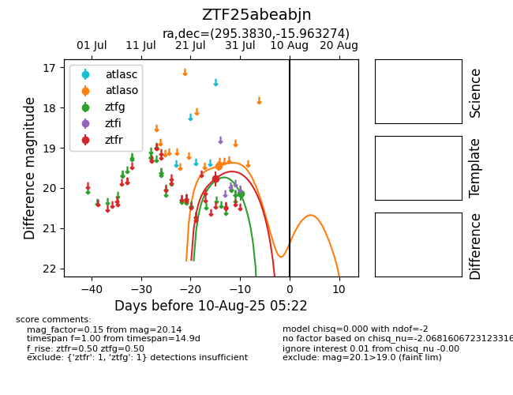

Target ZTF25abeabjn at 2025-08-10 05:22, see:
FINK: fink-portal.org/ZTF25abeabjn
Lasair: lasair-ztf.lsst.ac.uk/objects/ZTF25abeabjn
ALeRCE: alerce.online/object/ZTF25abeabjn
alt names
ZTF25abeabjn (ztf,fink)
coordinates:
equatorial (ra, dec) = (295.3830,-15.96327)
galactic (l, b) = (23.8695,-18.11639)
photometry
last atlaso=19.45, ztfg=20.14, ztfr=19.77
1 atlaso, 1 ztfg, 1 ztfr detections
